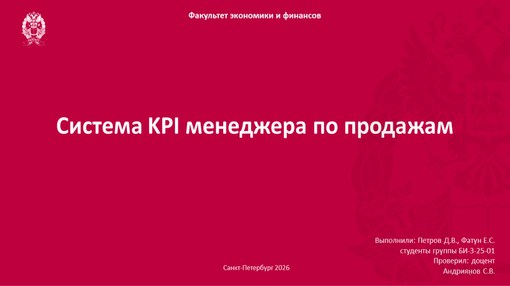

KPI менеджера по продажам
План конверсии, расчёт премии и риски манипуляции показателем. Групповая работа: Петров Д.В. и Фатун Е.С.
Основные расчёты
250 заявок × 10% конверсии = 25 сделок. При марже 4 000 ₽ это 100 000 ₽. При фактической конверсии 8% — 20 сделок. Это данные учебного задания.
Вывод
Конверсию нужно оценивать вместе с маржой и правилами обработки заявок. Иначе показатель можно улучшить без пользы для результата.